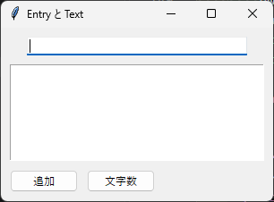

3. 基本ウィジェット
ウィンドウに配置するボタンや入力欄などの部品を、ウィジェットと呼びます。この章では、よく使う基本的なウィジェットとして、Label、Button、Entry、Text を説明します。
3.1 ウィジェットの共通事項
作成と親ウィジェット
ウィジェットを作成するときは、最初の引数に親ウィジェットを指定します。親ウィジェットには、メインウィンドウや、ウィジェットをまとめる Frame などを指定します。
label = ttk.Label(root, text="こんにちは")
配置
作成しただけのウィジェットは画面に表示されません。pack、grid、place のいずれかのメソッドで配置して、はじめて表示されます。この章のサンプルコードでは pack を使います。配置の方法は第 4 章で詳しく説明します。
オプションの設定と取得
ウィジェットの表示内容や動作は、オプションで指定します。オプションは、作成時にキーワード引数で指定するほか、作成後に configure メソッドで変更できます。現在の値は cget メソッドで取得します。
label = ttk.Label(root, text="こんにちは") # 作成時に指定
label.configure(text="さようなら") # 作成後に変更
print(label.cget("text")) # 現在の値を取得
label["text"] = "さようなら" のように、辞書と同じ書き方でオプションを読み書きすることもできます。
多くのウィジェットに共通する主なオプションを次に示します。
オプション |
説明 |
|---|---|
|
表示する文字列です。 |
|
ウィジェットの幅です。文字列を表示するウィジェットでは、文字数で指定します。 |
|
|
|
ボタンなどが操作されたときに呼び出す関数です。 |
|
表示内容と連動させる変数です。第 5 章で説明します。 |
ウィジェットが不要になったら destroy メソッドで破棄します。メインウィンドウの destroy を呼び出すと、ウィンドウが閉じてアプリケーションが終了します。
3.2 Label
Label は、文字列や画像を表示するウィジェットです。ユーザーは Label の内容を編集できません。主なオプションを次に示します。
オプション |
説明 |
|---|---|
|
表示する文字列です。 |
|
表示する画像（ |
|
ウィジェット内での文字列の位置です。 |
|
指定した長さ（ピクセル）を超えると、文字列を折り返します。 |
|
文字列の周りの余白です（ttk のみ）。 |
3.4 Entry
Entry は、1 行の文字列を入力するウィジェットです。主なメソッドを次に示します。
メソッド |
説明 |
|---|---|
|
入力されている文字列を返します。 |
|
指定した位置に文字列を挿入します。 |
|
開始位置から終了位置の手前までの文字列を削除します。 |
|
キーボードからの入力を受け付ける状態（フォーカスがある状態）にします。 |
位置は、先頭を 0 とする整数で指定します。末尾は "end" で表します。したがって、entry.delete(0, "end") で入力内容をすべて削除できます。
パスワードの入力欄のように入力内容を隠したい場合は、show="*" オプションを指定します。
3.5 Text
Text は、複数行の文字列を入力・表示するウィジェットです。ttk には Text がないため、tk の tk.Text を使います。
Text では、文字の位置を "行.列" の形式の文字列（インデックス）で表します。行は 1 から、列は 0 から数えます。よく使うインデックスを次に示します。
インデックス |
意味 |
|---|---|
|
1 行目の先頭（文書の先頭）です。 |
|
文書の末尾です。Text は末尾に改行を 1 つ自動で付けるため、その改行の後ろを指します。 |
|
|
|
入力カーソルの位置です。 |
文字列の取得、挿入、削除には、次のメソッドを使います。
content = text.get("1.0", "end-1c") # すべての文字列を取得
text.insert("end", "追加する文字列\n") # 末尾に挿入
text.delete("1.0", "end") # すべて削除
次のサンプルコードは、Entry に入力した文字列を、ボタンを押したときに Text の末尾に追加します。
1"""第 3 章: Entry と Text を使うサンプルです。
2
3Entry に入力した 1 行の文字列を、ボタンで Text の末尾に追加します。
4"""
5
6import tkinter as tk
7from tkinter import ttk
8
9
10def main() -> None:
11 """入力欄と複数行テキストを持つウィンドウを表示します。"""
12 root = tk.Tk()
13 root.title("Entry と Text")
14
15 entry = ttk.Entry(root, width=40)
16 entry.pack(padx=10, pady=(10, 5))
17 entry.focus_set() # 起動直後から入力できるようにします
18
19 text = tk.Text(root, width=40, height=8)
20 text.pack(padx=10, pady=5)
21
22 def add_line() -> None:
23 """Entry の内容を Text の末尾に追加し、Entry を空にします。"""
24 value = entry.get()
25 if value:
26 text.insert("end", value + "\n")
27 entry.delete(0, "end")
28
29 def show_length() -> None:
30 """Text に入力されている文字数をタイトルバーに表示します。"""
31 # "end" は末尾の改行も含むため "end-1c" (末尾の 1 文字手前) までを取得します
32 content = text.get("1.0", "end-1c")
33 root.title(f"Entry と Text ({len(content)} 文字)")
34
35 add_button = ttk.Button(root, text="追加", command=add_line)
36 add_button.pack(side="left", padx=(10, 5), pady=(5, 10))
37
38 length_button = ttk.Button(root, text="文字数", command=show_length)
39 length_button.pack(side="left", padx=5, pady=(5, 10))
40
41 root.mainloop()
42
43
44if __name__ == "__main__":
45 main()

実行結果
Text の主なオプションには、行の折り返し方を指定する wrap（"none"、"char"、"word"）と、「元に戻す」機能を有効にする undo があります。どちらも第 12 章で使います。